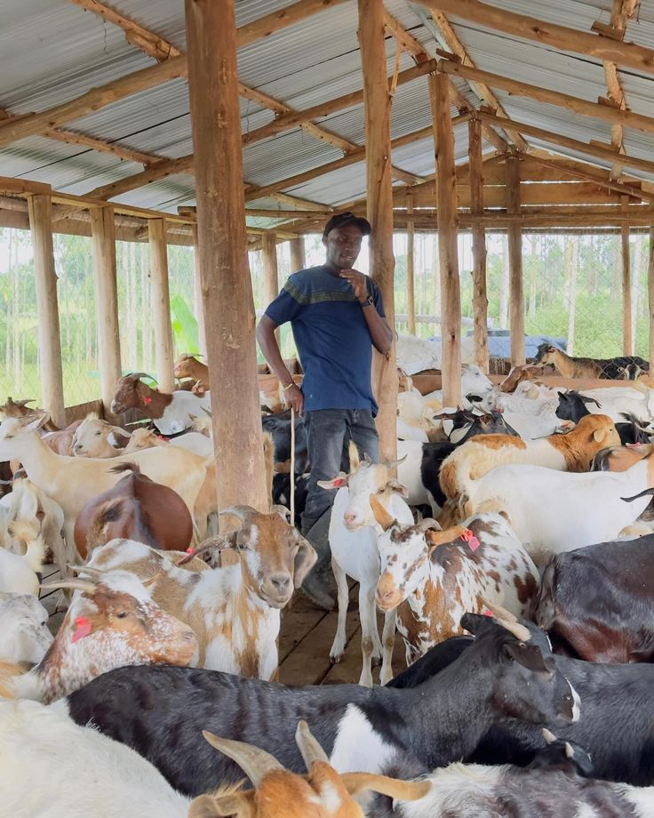
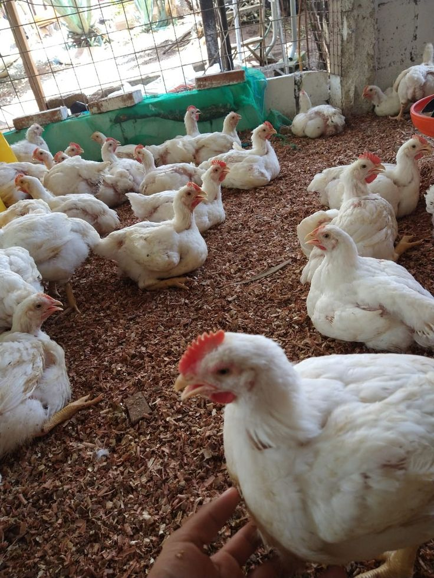
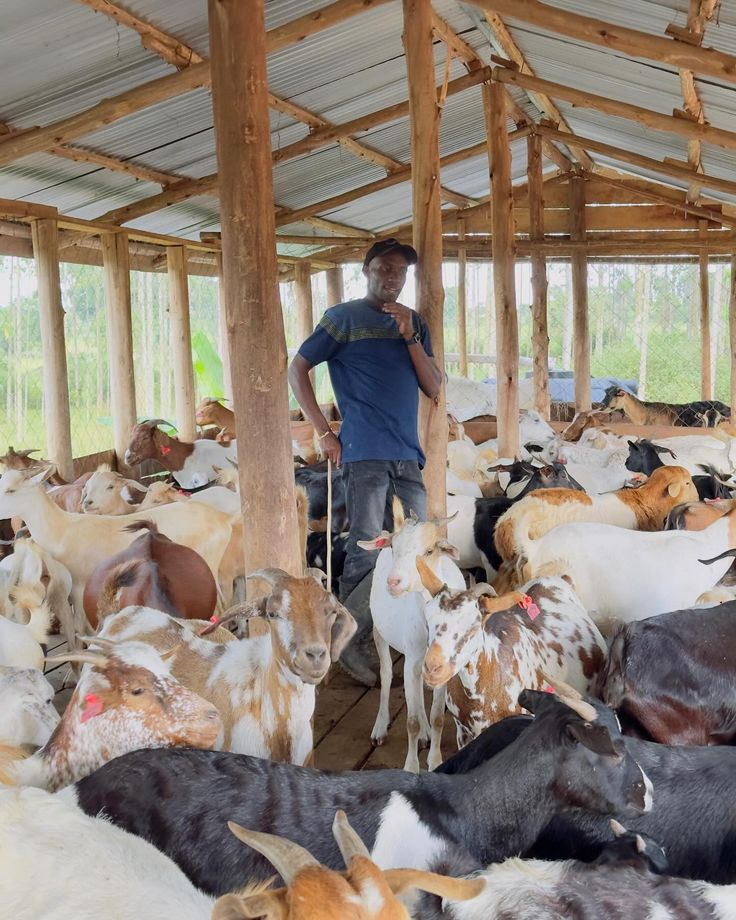
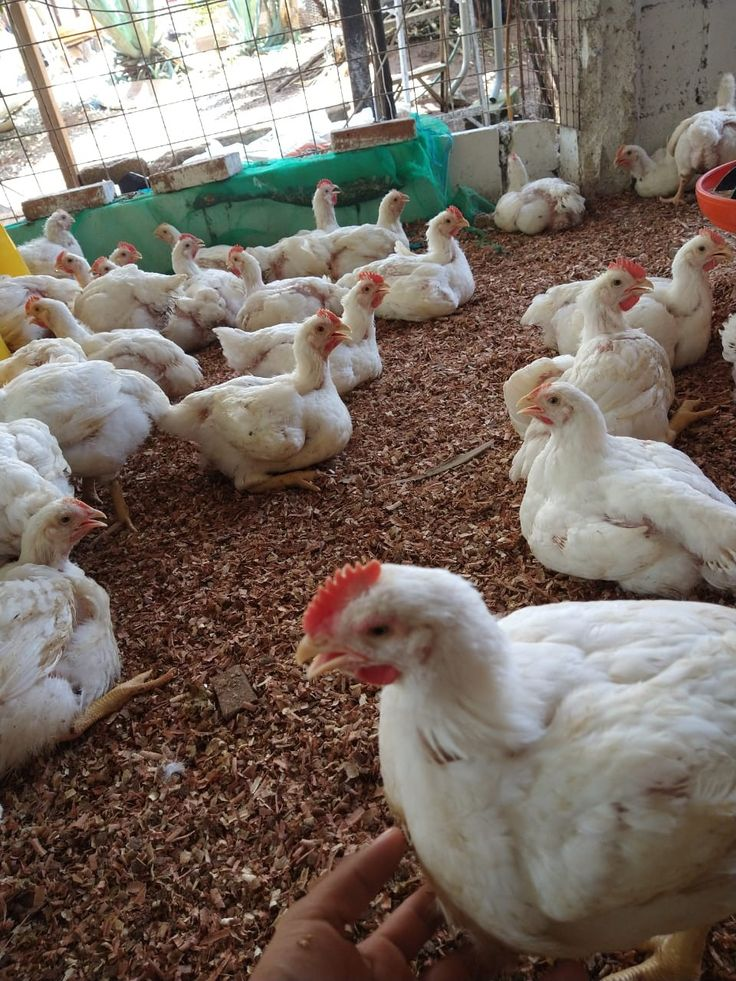

Our Mission
Devicklin Farms LTD aims to be a pioneering agricultural enterprise in Nigeria, producing high-quality, additive-free poultry products. We empower youths through training, provide consultancy services, and contribute to food security and economic empowerment.
About Us
Devicklin Farms is a modern mixed-agriculture farm dedicated to sustainable farming of crops, poultry, and livestock. With passion for nature and quality, we produce the best for your table.
Our Products
- Organic Vegetables & Grains
- Fresh Poultry & Eggs
- Healthy Livestock Meat & Dairy
Gallery
 


